Master temporal data visualization in Python: from datetime objects and automatic date formatters (mdates) to rolling smoothing, multi-horizon aggregation, event timelines (Gantt), polar diurnal clocks, and calendar grids.
Real-world engineering, finance, aur scientific research me continuous timestamps par data generate hota hai. Chahe IoT telemetry sensors ho, stock market prices ho, ya cloud server traffic — har ek observation ka ek precise moment in time hota hai jise Time-Series Data kaha jata hai.
A sequence of observations recorded chronologically at specific timestamps. Unlike cross-sectional tabular data, time series me order and spacing of time matter intensely. Ek din ka gap aur 10 din ke downtime gap me zameen-aasmaan ka farq hota hai!
Sabse common beginner mistake ye hoti hai ki students dates ko plain text strings (jaise ['01-Nov', '02-Nov', '12-Nov']) ke roop me Matplotlib ko pass kar dete hain. Jab aap strings dete hain, toh Matplotlib unhe categorical items samajhta hai — aur har label ke beech bilkul equal 1-unit physical spacing draw karta hai! Iska natija: 9-day blackout outage graph me gayab ho jata hai, aur data viewer ko galat impression milta hai.
import matplotlib.pyplot as plt
from datetime import date
import matplotlib.dates as mdates
# Faulty: Plain string labels (categorical spacing)
str_dates = ['Nov 01', 'Nov 02', 'Nov 03', 'Nov 12', 'Nov 13']
requests = [45, 52, 48, 85, 92]
# Correct: True datetime objects (chronologically honest spacing)
dt_dates = [
date(2026, 11, 1),
date(2026, 11, 2),
date(2026, 11, 3),
date(2026, 11, 12),
date(2026, 11, 13)
]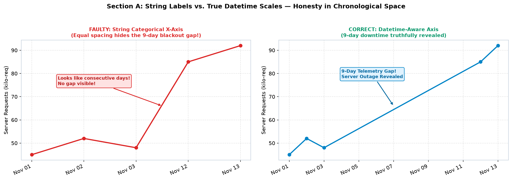
datetime objects faithfully scale chronological distance, exposing the server outage immediately.
Agar aap date strings pass karenge, toh missing days graph me visually vanish ho jayenge. Matplotlib date math perform nahi kar payega, moving averages align nahi honge, aur zoom karne par ticks explode ho jayenge. Hamesha Python datetime ya pandas.to_datetime() use karein!
Python standard library ka datetime module aur pandas time-series visualization ke foundational pillars hain. Before plotting, aapko teen core structures ka pata hona zaroori hai:
datetime.date(year, month, day) — Sirf calendar date (no time component). Daily reports, annual trends, ya high-level budgets ke liye suitable.datetime.datetime(year, month, day, hour, minute, second) — Full timestamp including clock time. Server latency, high-frequency sensor readings, hourly footfall ke liye ideal.datetime.timedelta(days=..., hours=..., minutes=...) — Duration/difference between timestamps. Time intervals generate karne ke liye standard tool.from datetime import datetime, timedelta
start_time = datetime(2026, 10, 15, 8, 0, 0)
timestamps = [start_time + timedelta(hours=i) for i in range(12)]
# Output: 08:00, 09:00, 10:00, ..., 19:00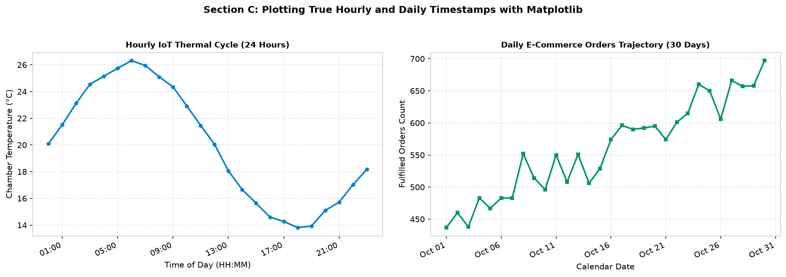
datetime.datetime; Right shows macro-level daily aggregation across a two-week period.
Jab aap real CSV files load karte hain, dates raw text format (jaise "2026-10-15 14:30:00") me aate hain. Unhe visualize karne se pehle pd.to_datetime(df['timestamp']) se convert karna mandatory step hai!
Jab aap X-axis par datetime objects pass karte hain, toh Matplotlib internally dates ko floating point numbers me convert karta hai (days since 0001-01-01 UTC plus fractional days). Default settings ke sath, date tick labels lambe hone ki wajah se ek doosre ke upar overlap ho kar messy black blobs ban jate hain!
Is ubiquitous visual problem ka standard one-line solution hai: fig.autofmt_xdate().
ha='right'): Label ka right edge tick line ke sath directly align hota hai, avoiding ambiguity.import matplotlib.pyplot as plt
from datetime import datetime, timedelta
# Create sample dates
dates = [datetime(2026, 10, 1) + timedelta(days=i) for i in range(15)]
vals = [100 + i*5 for i in range(15)]
fig, ax = plt.subplots(figsize=(8, 4))
ax.plot(dates, vals, marker='o', color='#0284c7')
# Crucial one-line call before saving or showing
fig.autofmt_xdate(rotation=30, ha='right')
plt.show()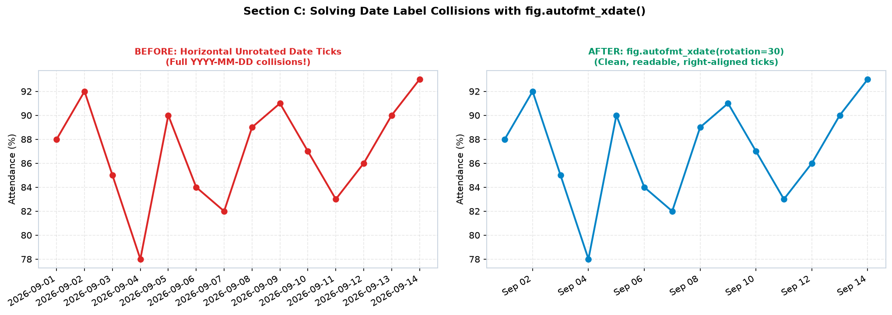
fig.autofmt_xdate(rotation=30).
Default formatting aksar aapke specific domain ke liye ideal nahi hoti. Example ke liye, weekly financial chart me seconds dikhana unnecessary noise hai, jabki high-frequency IoT log me month name dikhana insufficiently granular hai. Matplotlib ka sub-module matplotlib.dates (conventionally imported as import matplotlib.dates as mdates) aapko tick placement aur string formatting par absolute control deta hai.
Matplotlib temporal ticks do concepts par operate karte hain:
DayLocator(interval=3), MonthLocator(), YearLocator()).DateFormatter('%d %b') → "15 Oct").| Class / Method | Type | Description & Use Case |
|---|---|---|
mdates.DateFormatter('%Y-%m-%d') |
Formatter | Formats date ticks using C-standard strftime directives. |
mdates.DayLocator(interval=N) |
Locator | Places ticks every N days (ideal for daily or weekly charts). |
mdates.WeekdayLocator(byweekday=0) |
Locator | Places ticks on specific weekdays (0 = Monday). |
mdates.MonthLocator(interval=N) |
Locator | Places ticks every N months across quarterly or annual timeframes. |
mdates.YearLocator() |
Locator | Places ticks at calendar year boundaries for decadal trends. |
mdates.HourLocator(interval=N) |
Locator | Places ticks every N hours for intraday operational charts. |
| Directive | Output Example | Description |
|---|---|---|
%Y | 2026 | 4-digit Year |
%y | 26 | 2-digit Year |
%b / %B | Oct / October | Abbreviated / Full Month Name |
%m | 10 | 2-digit Month (01-12) |
%d | 15 | 2-digit Day of Month (01-31) |
%a / %A | Thu / Thursday | Abbreviated / Full Weekday Name |
%H:%M | 14:30 | 24-hour clock hour & minute |
import matplotlib.pyplot as plt
import matplotlib.dates as mdates
from datetime import date, timedelta
dates = [date(2026, 5, 1) + timedelta(days=i) for i in range(15)]
vals = [20 + i*2.2 for i in range(15)]
fig, ax = plt.subplots(figsize=(8, 4))
ax.plot(dates, vals, marker='o', color='#0284c7')
# Major ticks every 3 days formatted as '01 May'
ax.xaxis.set_major_locator(mdates.DayLocator(interval=3))
ax.xaxis.set_major_formatter(mdates.DateFormatter('%d %b'))
# Minor ticks on every single day
ax.xaxis.set_minor_locator(mdates.DayLocator(interval=1))
fig.autofmt_xdate(rotation=30)
plt.show()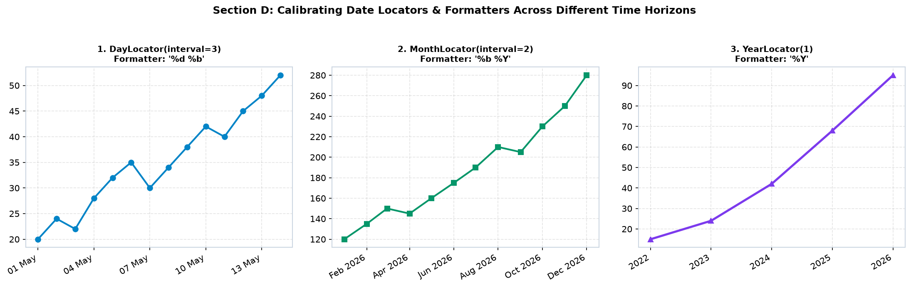
DayLocator(interval=3); 2. Bi-monthly scale with MonthLocator(interval=2); 3. Long-term multi-year horizon with YearLocator().
Ek raw time series me hazaron continuous timestamps ho sakte hain. Visualizing every raw timestamp creates visual noise and overwhelming clutter. Effective time-series analysis requires temporal aggregation — grouping data into meaningful time buckets.
Pandas ke resample() method se aap instant aggregation kar sakte hain:
df.resample('h').mean() → Hourly averagesdf.resample('D').sum() → Daily totalsdf.resample('W').sum() → Weekly totalsdf.resample('ME').sum() → Month-end totals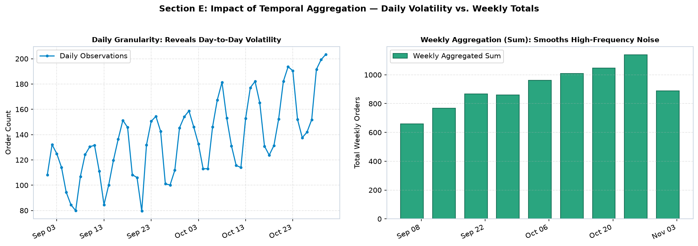
Aksar real projects me ek se zyada metrics ko same timeline par compare karna padta hai — jaise Server Alpha vs. Server Beta traffic, Actual vs. Forecasted Revenue, ya Inflow vs. Outflow cash flow. Jab multiple lines ek chart par draw kiye jate hain, toh visual clarity maintain karna critical challenge ban jata hai.
lw=2.2) dein, secondary baseline series ko muted color (jaise slate #94a3b8) ya lighter opacity (alpha=0.6) dein.linestyle='--') ya dotted (linestyle=':') styles use karein.framealpha=0.9 so it never occludes sudden trend spikes.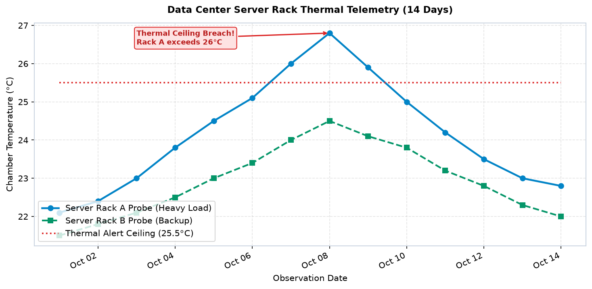
Sensors offline chale jate hain, server connectivity drop hoti hai, aur weekends par markets close rehte hain. Real-world temporal data is full of missing entries and irregular observation intervals. How you handle these gaps determines the scientific integrity of your chart.
Agar ek temperature sensor 2 din ke liye disconnect ho gaya, aur aapne missing data ko 0 fill kar diya, toh graph me achanak temperature 26°C se 0°C (freezing point) par plunge karega! This is factual misinformation that triggers false engineering alarms.
Matplotlib me agar kisi data point ki value np.nan hoti hai, toh ax.plot() automatically line segment ko break kar deta hai! Ye viewer ko saaf batata hai ki iss interval me data collect nahi ho saka (truthful reporting). Agar business reporting ke liye continuous line zaroori ho, toh missing segment ko distinct dotted style me draw karein taaki viewer ko pata chale ye mathematical estimate hai, real observation nahi.
import numpy as np
import pandas as pd
import matplotlib.pyplot as plt
# Simulate time series with missing outage gap
dates = pd.date_range('2026-11-01', periods=10, freq='D')
temps = np.array([24.0, 24.5, 25.0, np.nan, np.nan, 26.5, 27.0, 27.2, 27.5, 27.5])
# Interpolate missing gap explicitly
s_series = pd.Series(temps, index=dates)
s_interp = s_series.interpolate(method='linear')
fig, ax = plt.subplots(figsize=(8, 4))
# True observations with broken gap
ax.plot(dates, s_series, color='#0284c7', lw=2.5, marker='o', label='Observed Data')
# Dotted line to signal estimated imputation
ax.plot(dates, s_interp, color='#d97706', lw=2, linestyle=':', label='Interpolated Estimate')
ax.legend()
fig.autofmt_xdate(rotation=30)
plt.show()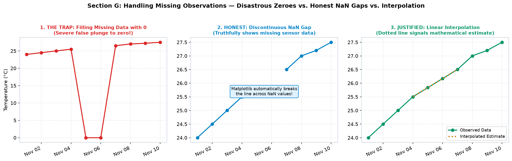
Almost har natural aur commercial time series teen fundamental components ka combination hoti hai (Classical Time-Series Decomposition):
Raw graph dekh kar decision-maker confused ho sakta hai ki "aaj sale kyu giri?". Agar aap seasonality aur trend alag-alag visualize karenge, toh saaf dikhega ki business overall grow kar raha hai (+Trend), aur aaj Sunday khatam ho kar Monday aaya hai isliye normal cyclical dip hua hai (-Seasonality).
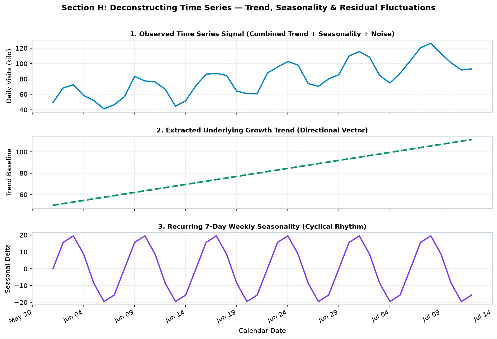
Jab time series me excessive noise ya daily fluctuations hoti hain, toh underlying direction dekhna mushkil ho jata hai. Is noise ko filter karne ka standard mathematical technique hai Rolling Average (Moving Average).
Ek 7-day rolling average kisi bhi given day par pichle 7 dinon ke observations ka arithmetic mean calculate karta hai:
import pandas as pd
# Load or define daily series
df['rolling_7'] = df['daily_orders'].rolling(window=7).mean()
df['rolling_30'] = df['daily_orders'].rolling(window=30).mean()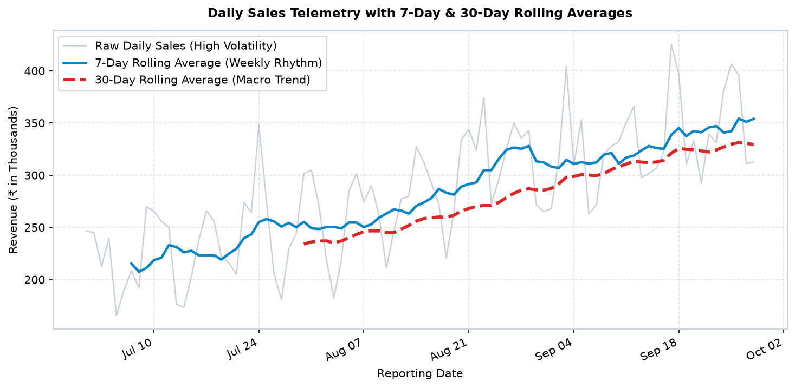
Moving average hamesha backward-looking (lagging) indicator hota hai — ye pichle window ka average batata hai. Isse future forecast samajhne ki galti kabhi na karein!
Continuous line charts rates aur trajectories ke liye best hote hain, lekin discrete calendar periods ke aggregate totals (jaise monthly revenue, quarterly profits, weekly registrations) ke liye Bar Charts visually superior hote hain.
Jab aap numerical X-axis par bar plot banate hain, toh width=0.8 ka matlab 0.8 coordinate units hota hai. Lekin jab X-axis par datetime objects hote hain, toh Matplotlib me X-coordinate units in days represent karte hain! Isliye monthly bars ke liye width=20 (20 days wide) ya daily bars ke liye width=0.7 (0.7 days wide) pass kiya jata hai taaki bars naturally space out ho sakein.
import matplotlib.pyplot as plt
import matplotlib.dates as mdates
from datetime import date
months = [date(2026, m, 1) for m in range(1, 7)]
revenue = [42.5, 51.0, 48.2, 63.8, 71.4, 82.0]
fig, ax = plt.subplots(figsize=(8, 4.5))
# width=20 means each bar is 20 days wide on the calendar timeline!
bars = ax.bar(months, revenue, width=20, color='#0d9488', edgecolor='#0f766e', linewidth=1.2)
# Value annotations directly above each bar
for bar in bars:
yval = bar.get_height()
ax.text(bar.get_x() + bar.get_width()/2, yval + 1.2, f'₹{yval:.1f}L',
ha='center', va='bottom', fontsize=9.5, fontweight='bold')
ax.xaxis.set_major_formatter(mdates.DateFormatter('%b %Y'))
ax.xaxis.set_major_locator(mdates.MonthLocator())
fig.autofmt_xdate(rotation=30)
plt.show()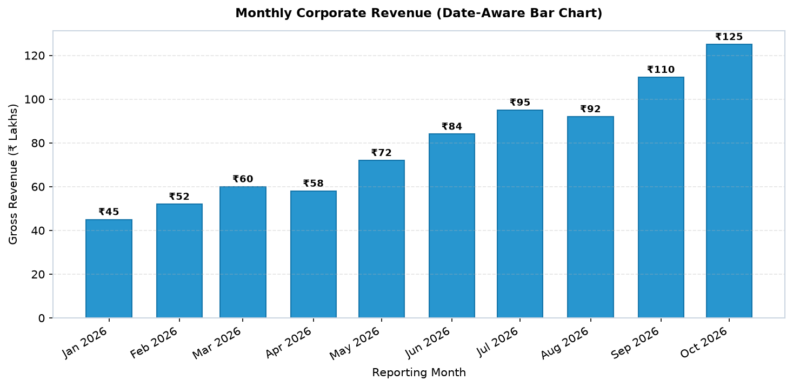
Agar aapke paas 24 ghante aur 7 dinon ka multi-dimensional traffic data ho, toh 7 alag-alag line plots banana cluttered aur unreadable ho jayega. Iss do-dimensional temporal pattern ko instantly reveal karne ke liye standard visual tool hai: Hour × Day-of-Week Heatmap.
Matplotlib ke ax.imshow() function se aap 2D numpy matrix ko rich color-coded heatmap me convert kar sakte hain:
import matplotlib.pyplot as plt
import numpy as np
# traffic_matrix shape: (7, 24) -> 7 days of week, 24 hours of day
im = ax.imshow(traffic_matrix, cmap='YlGnBu', aspect='auto', origin='upper')
# Set custom weekday and hourly tick labels
days = ['Mon', 'Tue', 'Wed', 'Thu', 'Fri', 'Sat', 'Sun']
ax.set_yticks(range(7))
ax.set_yticklabels(days)
ax.set_xticks(range(0, 24, 3))
ax.set_xticklabels([f'{h:02d}:00' for h in range(0, 24, 3)])
fig.colorbar(im, ax=ax, label='Active Concurrent Users')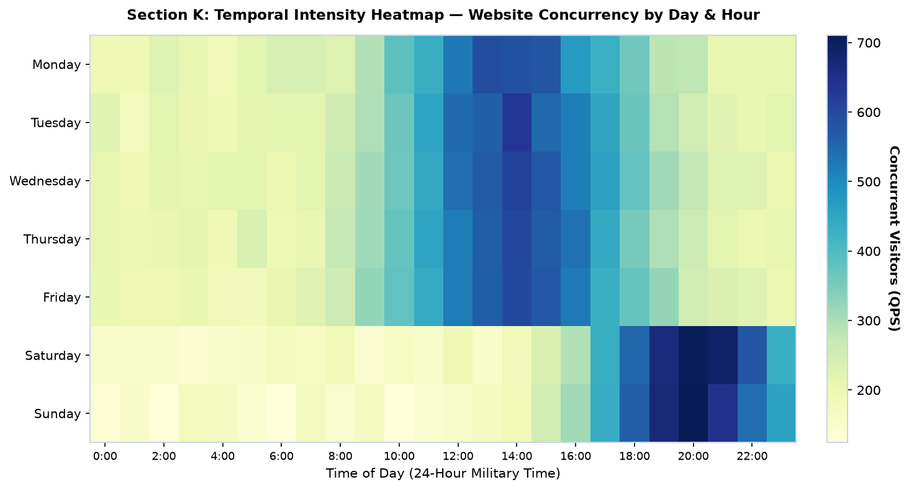
GitHub contribution charts aur annual fitness trackers me calendar grid presentation sabse intuitive hoti hai. Isme X-axis par calendar weeks (1 to 52) aur Y-axis par days of the week (Monday to Sunday) hote hain, jahan har cell ka color uss din ki activity intensity represent karta hai.
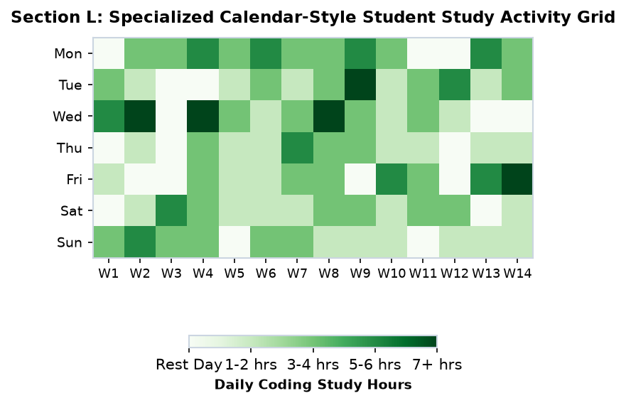
24-hour diurnal cyclical phenomena — jaise electricity load, wind direction, ya daily commute patterns — linear line plot me start aur end points par artificially split ho jate hain (23:59 aur 00:00 alag-alag sides me dikhte hain). Lekin real life me time circular cycle hota hai!
Matplotlib me subplot_kw=dict(projection='polar') use karke aap 24-hour clock visualization create kar sakte hain:
import numpy as np
import matplotlib.pyplot as plt
hours = np.linspace(0, 24, 25) # 0 to 24 hours
theta = (hours / 24.0) * (2 * np.pi) # Map 24 hours to 360 degrees (2pi radians)
fig, ax = plt.subplots(subplot_kw=dict(projection='polar'), figsize=(6, 6))
# Set 00:00 (Midnight) at the top of the clock
ax.set_theta_zero_location('N')
# Make time advance clockwise
ax.set_theta_direction(-1)
# Format hour labels around circumference
ax.set_xticks(np.linspace(0, 2*np.pi, 8, endpoint=False))
ax.set_xticklabels(['00:00\n(Midnight)', '03:00', '06:00', '09:00',
'12:00\n(Noon)', '15:00', '18:00', '21:00'])
ax.plot(theta, demand, color='#0284c7', lw=2.5, marker='o')
ax.fill(theta, demand, color='#0284c7', alpha=0.15)
plt.show()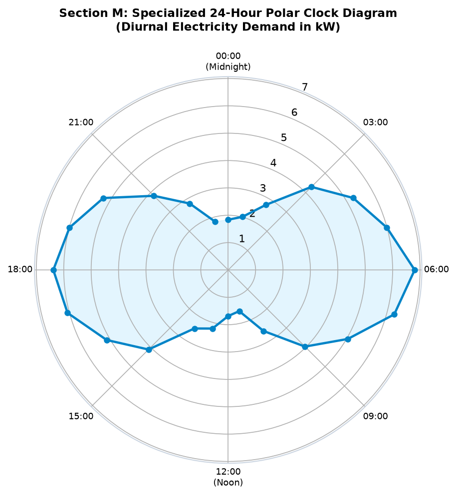
Software development sprint planning, product lifecycles, aur operational event scheduling me time continuous curve nahi balki discrete duration blocks ke roop me express hota hai. Matplotlib me horizontal timeline blocks draw karne ke liye specialized function hai: ax.broken_barh().
ax.broken_barh(xranges, yrange, facecolors=...) do parameters accept karta hai:
xranges: List of tuples [(start_x, width_x), ...] — specifies elapsed time intervals.yrange: Tuple (start_y, height_y) — specifies track vertical level and thickness.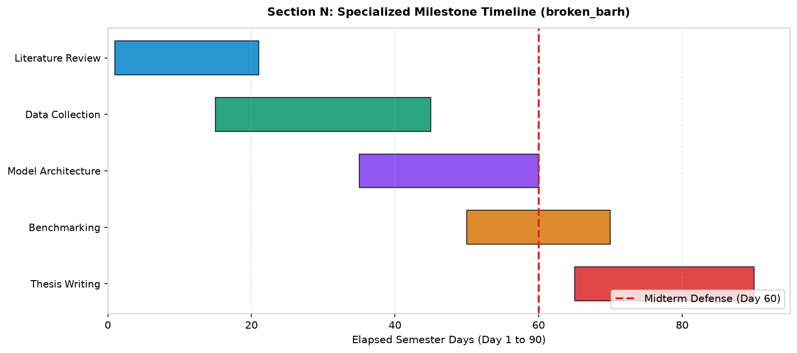
broken_barh(). Distinct tracks display Design, Core Engine, Testing, and Deployment phases with vertical milestone markers.
Distributed applications aur global data pipelines me timestamps aksar alag-alag time zones me record hote hain. Time zones ko properly handle na karna silently data ko distort kar deta hai.
| Concept | Definition & Impact | Golden Production Rule |
|---|---|---|
| Naive Datetime | A timestamp without time zone information (e.g. datetime(2026, 10, 15, 14, 0)). Matplotlib assumes local time without offset math. |
Never compare naive datetimes from different servers or geographic regions! |
| Aware Datetime | A timestamp carrying an explicit timezone (e.g. via Python 3.9+ zoneinfo.ZoneInfo("Asia/Kolkata") or UTC). |
Always store and process pipeline data in UTC, then convert to target display timezone right before plotting. |
| Daylight Saving Time (DST) | Twice a year clock jumps cause an artificial 1-hour duplicate or missing interval in local time. | Plotting in UTC eliminates artificial DST discontinuities completely. |
from datetime import datetime
from zoneinfo import ZoneInfo
# Convert UTC log timestamps to Indian Standard Time (IST)
utc_time = datetime(2026, 10, 15, 6, 30, tzinfo=ZoneInfo("UTC"))
ist_time = utc_time.astimezone(ZoneInfo("Asia/Kolkata"))
print("UTC:", utc_time) # 2026-10-15 06:30:00+00:00
print("IST:", ist_time) # 2026-10-15 12:00:00+05:30 (+5:30 offset)Ab hum upar seekhe huye sabhi individual techniques (datetime conversion, mdates formatting, missing NaN breaks, rolling averages, broken_barh timelines, dual subplots) ko 3 comprehensive production-grade projects me synthesize karenge.
Scenario: Ek pharmaceutical warehouse thermal chamber me temperature sensor laga hai. 7-day run ke dauran Day 4 par 12 ghante ka sensor power failure hota hai. Hume raw noisy sensor data, 12-hour rolling average, danger threshold (27°C), aur explicit truthful NaN line break visualize karke report deni hai.
import numpy as np
import pandas as pd
import matplotlib.pyplot as plt
import matplotlib.dates as mdates
# Generate 7 days of hourly timestamps (168 hours)
dates = pd.date_range('2026-10-01', periods=168, freq='h')
t = np.arange(168)
base_temp = 22.0 + 4.0 * np.sin(2 * np.pi * t / 24) + np.random.normal(0, 0.4, 168)
# Inject 12-hour power outage blackout on Day 4
base_temp[78:90] = np.nan
s = pd.Series(base_temp, index=dates)
rolling_12 = s.rolling(12, min_periods=6).mean()
fig, ax = plt.subplots(figsize=(12, 5), dpi=150)
ax.plot(dates, s, color='#94a3b8', alpha=0.7, lw=1.2, label='Hourly Sensor Raw Telemetry')
ax.plot(dates, rolling_12, color='#0284c7', lw=2.6, label='12-Hour Rolling Average (Smoothed Trend)')
ax.axhline(27.0, color='#dc2626', linestyle='--', lw=2, label='Chamber Danger Limit (27°C)')
# Annotate truthful NaN outage break
ax.annotate('12-Hour Sensor Power Outage\n(Truthful NaN Line Break)',
xy=(dates[84], 22.0), xytext=(dates[50], 19.0),
arrowprops=dict(facecolor='#0284c7', edgecolor='#0284c7', arrowstyle='->', lw=1.6),
fontweight='bold', fontsize=9, color='#0369a1',
bbox=dict(boxstyle='round,pad=0.3', facecolor='#e0f2fe', edgecolor='#0284c7'))
ax.xaxis.set_major_formatter(mdates.DateFormatter('%b %d'))
ax.xaxis.set_major_locator(mdates.DayLocator())
fig.autofmt_xdate(rotation=30)
ax.set_title("IoT Industrial Thermal Chamber Telemetry (7-Day Continuous Monitoring)", fontweight='bold')
ax.set_ylabel("Temperature (°C)")
ax.legend(loc='upper right')
ax.grid(True, linestyle='--', alpha=0.35)
plt.show()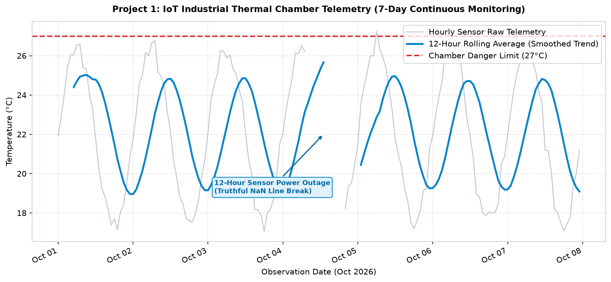
Scenario: Ek e-commerce startup ke quarterly review ke liye 90-day trajectory dashboard prepare karna hai. Dashboard me Top Banner par continuous daily order trajectory with 7-day moving average aur Q3 target line dikhayenge, Bottom Left par date-aware monthly aggregated revenue bars dikhayenge, aur Bottom Right par daily order volume frequency histogram dikhayenge.
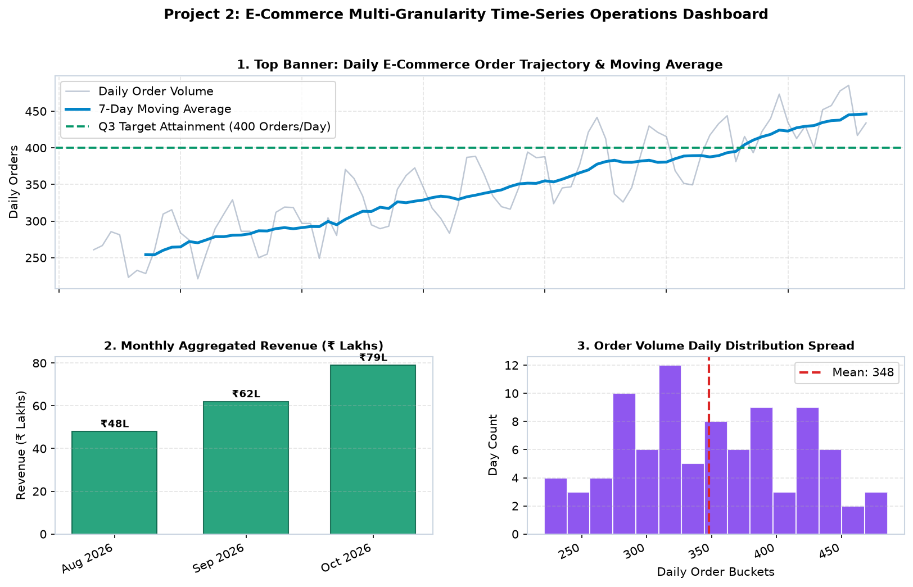
Scenario: College IT administration ke liye portal traffic monitoring dashboard. 60-day semester ke dauran Hackathon aur Midterm exam events ke high-traffic surges ko vertical dashed event marker lines aur milestone callouts ke zariye annotate karenge, sath hi weekday traffic variation boxplot aur academic lifecycle Gantt timeline render karenge.
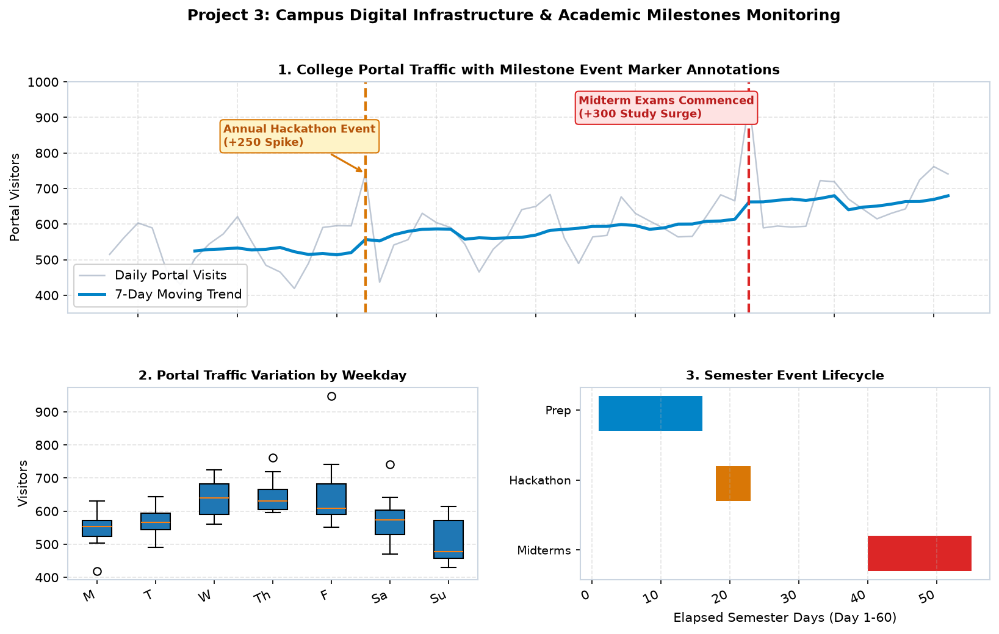
Time-series charts me hone wale 4 sabse critical errors aur unke battle-tested solutions:
| Mistake / Anti-Pattern | Visual Consequence | Standard Production Fix |
|---|---|---|
| Passing string dates instead of datetime | Categorical spacing: Missing days collapse, hiding long downtime outages. | Convert all date columns via pd.to_datetime() or datetime.strptime(). |
| Omitting fig.autofmt_xdate() | Horizontal date labels smash together into an unreadable black blob. | Always invoke fig.autofmt_xdate(rotation=30, ha='right'). |
| Filling missing telemetry gaps with zero | Chart plunges artificially to 0, causing false panics and incorrect analytics. | Leave missing points as np.nan so Matplotlib breaks the line faithfully. |
| Calling rolling average a forecast | Misleading executive leadership about future business performance. | Clarify that rolling average is a backward-looking smoothing filter, not an autoregressive forecast. |
Time-series charts me rotated date labels hone ki wajah se default export me aksar bottom labels figure canvas se cut off ho jate hain. Is clipping problem ko completely prevent karne ke liye standard production recipe follow karein:
# Always export with high DPI and bbox_inches='tight'
fig.savefig('timeseries_report.png', dpi=300, bbox_inches='tight', facecolor='white')
fig.savefig('timeseries_vector.pdf', bbox_inches='tight') # For academic publicationsbbox_inches='tight' Matplotlib ko instruct karta hai ki rotated date labels aur bottom tick text ka exact bounding box measure kare aur canvas boundaries ko automatically expand kare taaki zero text clipping ho!
mdates.DateFormatter() for text syntax and mdates.DayLocator() / MonthLocator() for tick positions.fig.autofmt_xdate(rotation=30) automatically slants and right-aligns date labels.np.nan to trigger genuine line breaks rather than false plunges to 0.Series.rolling(window).mean() to reveal underlying trends amidst noise without mistaking it for a future forecast.broken_barh() for Gantt event schedules, polar projections for 24-hr diurnal clocks, and imshow() for hour-by-weekday traffic heatmaps.| Function / Class | Module / Scope | Primary Purpose |
|---|---|---|
fig.autofmt_xdate() | matplotlib.figure.Figure | Auto-rotates and right-aligns bottom date tick labels. |
mdates.DateFormatter(fmt) | matplotlib.dates | Formats dates using strftime syntax (e.g., '%b %d, %Y'). |
mdates.DayLocator(interval) | matplotlib.dates | Generates tick marks every specified number of days. |
mdates.MonthLocator(interval) | matplotlib.dates | Generates tick marks on month boundaries. |
mdates.YearLocator(interval) | matplotlib.dates | Generates tick marks on annual boundaries. |
ax.broken_barh() | matplotlib.axes.Axes | Plots horizontal discrete duration blocks (Gantt charts). |
pd.to_datetime() | pandas | Converts string columns or sequences into datetime timestamps. |
Series.rolling(w).mean() | pandas | Calculates moving average smoothing over window w. |
ax.imshow() | matplotlib.axes.Axes | Renders 2D matrix heatmaps (e.g. 24h × 7-day load). |
Aapko 30 days ka hourly telemetry array diya gaya hai. Pandas se weekly mean calculate karke ek clean line plot banayein jisme har Monday tick mark ho.
import pandas as pd
import matplotlib.pyplot as plt
import matplotlib.dates as mdates
dates = pd.date_range('2026-10-01', periods=720, freq='h')
df = pd.DataFrame({'temp': 20 + np.random.randn(720).cumsum()}, index=dates)
weekly = df.resample('W-MON').mean()
fig, ax = plt.subplots(figsize=(8, 4))
ax.plot(weekly.index, weekly['temp'], marker='s', color='#0284c7', lw=2)
ax.xaxis.set_major_locator(mdates.WeekdayLocator(byweekday=0))
ax.xaxis.set_major_formatter(mdates.DateFormatter('%b %d'))
fig.autofmt_xdate(rotation=30)
plt.show()15th Oct se 18th Oct tak ke server maintenance window ko yellow background highlight (axvspan) se mark karein.
from datetime import date
import matplotlib.pyplot as plt
start_maint = date(2026, 10, 15)
end_maint = date(2026, 10, 18)
fig, ax = plt.subplots(figsize=(8, 4))
ax.plot(dates, requests, color='#0284c7')
ax.axvspan(start_maint, end_maint, color='#fef08a', alpha=0.5, label='Maintenance Window')
ax.legend()
fig.autofmt_xdate()
plt.show()Stock price ko primary Y-axis par line plot karein aur daily trading volume ko twin axis (ax.twinx()) par date bars ke roop me draw karein.
fig, ax1 = plt.subplots(figsize=(9, 4.5))
ax2 = ax1.twinx()
ax1.plot(dates, prices, color='#0284c7', lw=2, label='Closing Price')
ax2.bar(dates, volumes, width=0.6, color='#94a3b8', alpha=0.35, label='Volume')
ax1.set_ylabel('Price (₹)', color='#0284c7')
ax2.set_ylabel('Volume (K)', color='#64748b')
fig.autofmt_xdate(rotation=30)
plt.show()Discrete daily transactions ko cumulative total me convert karein aur step chart (where='mid') ke roop me visualize karein.
cum_revenue = np.cumsum(daily_revenue)
fig, ax = plt.subplots(figsize=(8, 4))
ax.step(dates, cum_revenue, where='mid', color='#059669', lw=2.2)
ax.xaxis.set_major_formatter(mdates.DateFormatter('%d %b'))
fig.autofmt_xdate(rotation=30)
plt.show()broken_barh() use karke Morning (06:00-14:00), Evening (14:00-22:00), aur Night (22:00-06:00) production shifts ka timeline schedule plot karein.
fig, ax = plt.subplots(figsize=(8, 3))
ax.broken_barh([(6, 8)], (2, 0.6), facecolors='#0284c7', label='Morning Shift')
ax.broken_barh([(14, 8)], (1, 0.6), facecolors='#d97706', label='Evening Shift')
ax.broken_barh([(0, 6), (22, 2)], (0, 0.6), facecolors='#475569', label='Night Shift')
ax.set_yticks([0.3, 1.3, 2.3])
ax.set_yticklabels(['Night', 'Evening', 'Morning'])
ax.set_xlabel('Hour of Day (0-24)')
plt.show()Cause: Jab aap X-axis limit ko numerical zero (ax.set_xlim(0, 100)) set kar dete hain jabki axis par date data plotted hai. Matplotlib dates ordinal floating numbers start from 1 (Day 0001-01-01).
Fix: Pass actual datetime objects to set_xlim: ax.set_xlim(date(2026, 10, 1), date(2026, 10, 31)).
Cause: fig.autofmt_xdate() call hone se pehle figure size ya layout parameters re-adjust karne se text box zero dimensions compute karta hai.
Fix: Always place fig.autofmt_xdate(rotation=30) as the final formatting call right before plt.savefig() or plt.show().
Cause: Datetime column me epoch timestamps in milliseconds (e.g., 1697360000000) the, jise raw integer pass kar diya gaya. Matplotlib floating date units measure days, not milliseconds!
Fix: Use pd.to_datetime(df['timestamp'], unit='ms') to cleanly convert milliseconds into Python datetimes before passing to Matplotlib.
fig.autofmt_xdate() for automated tick rotation and alignment.DayLocator, MonthLocator, YearLocator) and formatters (DateFormatter).np.nan line segments.In Topic 19, we explore the third dimension! You will master 3D axes setup, 3D scatter plots, 3D surface visualizations, wireframes, contour projections, and interactive camera elevation/azimuth rotation.